The COVID-19 Seroprevalence Studies Hub is a high-impact project funded by the National Cancer Institute (NCI), the National Institute of Allergy and Infectious Diseases (NIAID), and the Centers for Disease Control and Prevention (CDC). This online dashboard was developed to assist researchers and policymakers in tracking seroprevalence studies of SARS-CoV-2 across the United States—using antibody data to better understand population-level exposure to the virus.
This initiative involved multiple stakeholders and complex data sets, requiring a highly collaborative and strategic design approach. I led the UX efforts from concept to launch, including stakeholder engagement to define requirements, development of information architecture, and creation of wireframes and interactive prototypes. I also partnered closely with UI engineers and QA teams to ensure the platform met full WCAG compliance and delivered a seamless, accessible user experience.
One of the primary design challenges was synthesizing and standardizing non-uniform study data to present it in a clear, intuitive, and user-friendly interface. The final product was widely praised for its effectiveness, usability, and design clarity. It has been showcased by the World Health Organization (WHO) and other national health organizations.
Notably, Dr. Mary G. George, Deputy Associate Director for Science at the CDC, commented:
Authors and developers are to be commended for producing a useful tool. The web interface is clean, uncluttered, fast to use, easy to use and understand, and provides easy access to featured studies.
COVID-19 SeroHub Dashboard
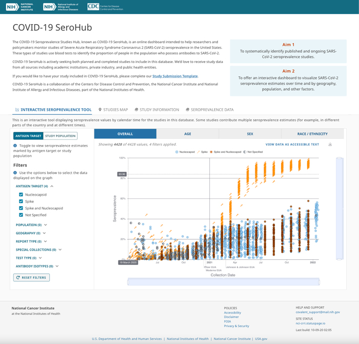
Individual Study Page
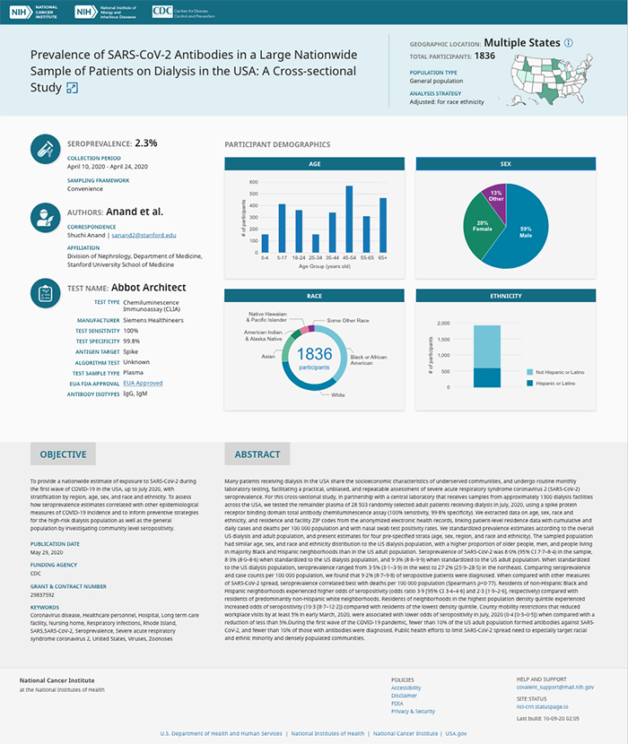
Data Entry Wireframe
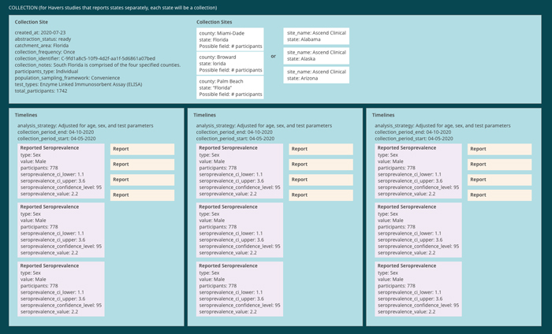
Data Entry Form Design
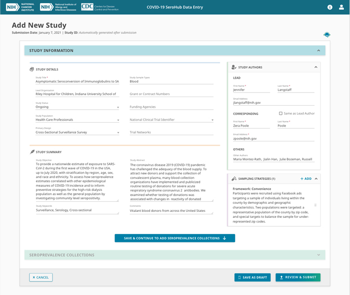
National Childhood Cancer Registry (NCCR) Data Platform
Category
UI/UX Information Architecture Wireframe Prototype Accessibility Requirements
Tools
Figma Illustrator Photoshop Vuetify LucidChart
The National Childhood Cancer Registry (NCCR) Data Platform integrates cancer data for children, adolescents, and young adults (AYAs) from population-based cancer registries and other contributing sources. By matching and consolidating data for individuals across various systems, the platform offers a centralized resource. Researchers can securely search, request, visualize, and analyze de-identified information through a cloud-based interface.
The primary goals of the NCCR Data Platform are to eliminate data silos and improve the use of public health surveillance data to better understand cancer causes, treatment effectiveness, recurrence, comorbidities, secondary malignancies, and long-term effects among children and AYAs in the U.S. Throughout the project, I developed a strong relationship with the clients, maintaining ongoing communication to deeply understand their needs and challenges. This ensured the final design effectively addressed their requirements. It was an incredibly rewarding experience, and the clients’ enthusiastic and positive feedback reinforced the value and impact of our work.
About NCCR
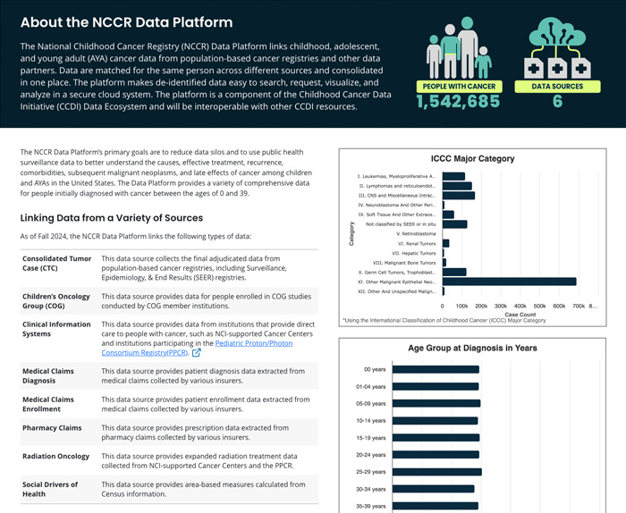
Data Browser
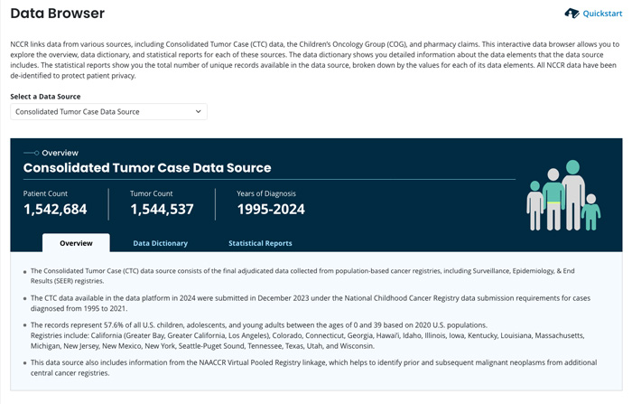
Cohort Discovery (content blurred intentionally)
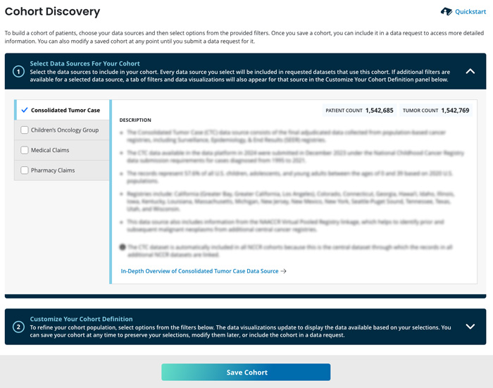
Cohort Filters and Data Visualizations Helpful Tips
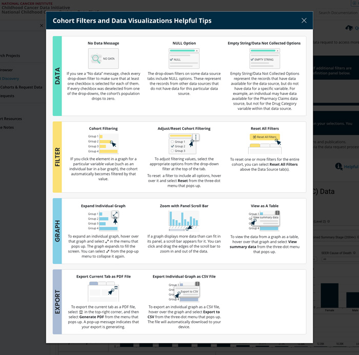
NCI-MATCH: Combo MATCH
Category
UI/UX Information Architecture Wireframe Prototype Accessibility Requirements
NCI-MATCH is a flagship initiative supporting the National Cancer Institute’s precision medicine clinical trial, which matches cancer patients to targeted treatments based on the genetic mutations identified in their tumors—regardless of cancer type. This groundbreaking trial explores the effectiveness of genomics-guided therapy in improving treatment outcomes.
Our suite of MATCH applications supports a wide range of stakeholders—including patients, oncology groups, laboratories, and researchers—by facilitating end-to-end tracking of patient enrollment, treatment assignment, and clinical documentation. A key design challenge was accommodating the extensive variability across treatment protocols and eligibility requirements, while ensuring the interface remained clear and intuitive for all user types.
This project offered an invaluable opportunity to dive deeply into the complexities of precision medicine and clinical research. It broadened my understanding of the nuanced workflows, roles, and needs of diverse user groups within the clinical trial ecosystem.
Combo MATCH Landing Page
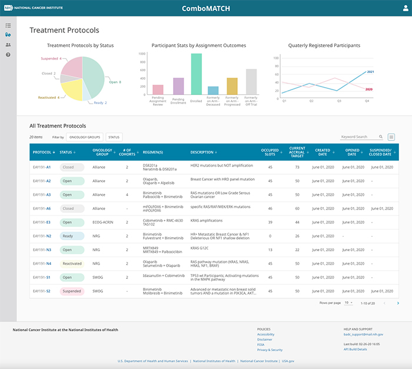
Treatment Protocol Details Page
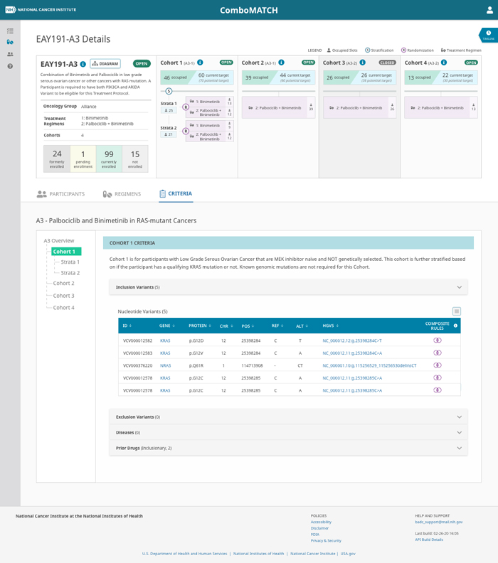
Treatment Protocol Diagram
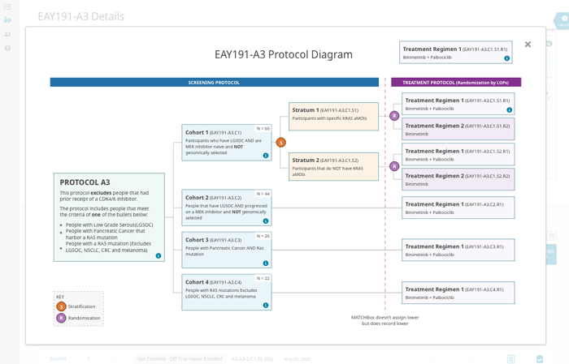
Participant Details Page
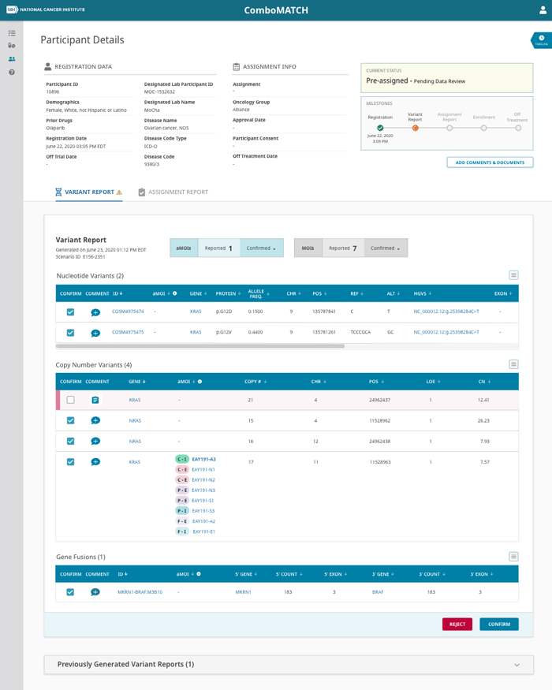
Participant Timeline Before and After Comparison
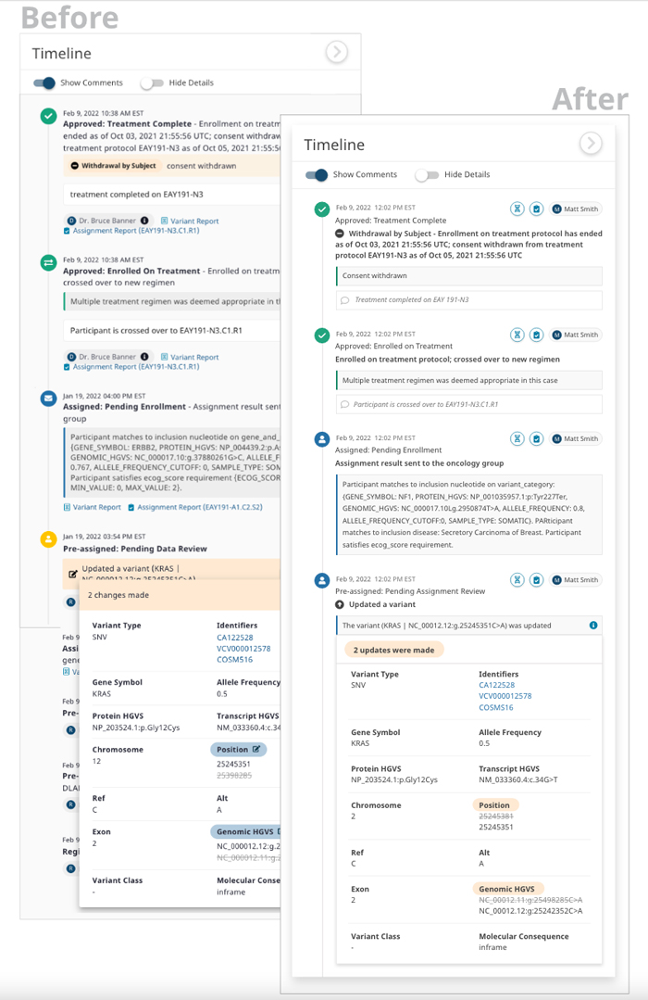
Combo MATCH Site Map
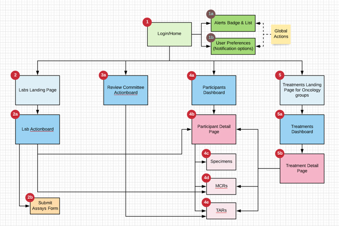
User Stories Map
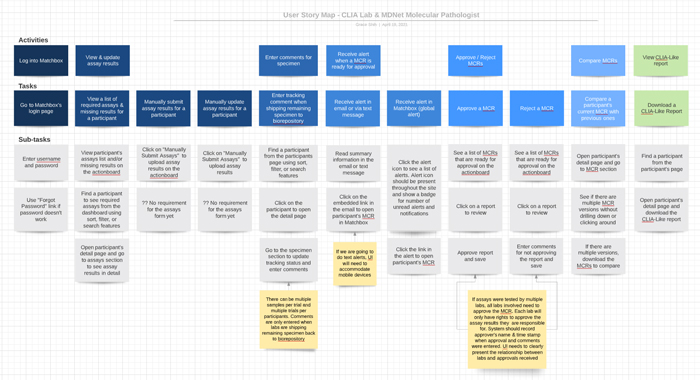
User Stories mapping to Site Map
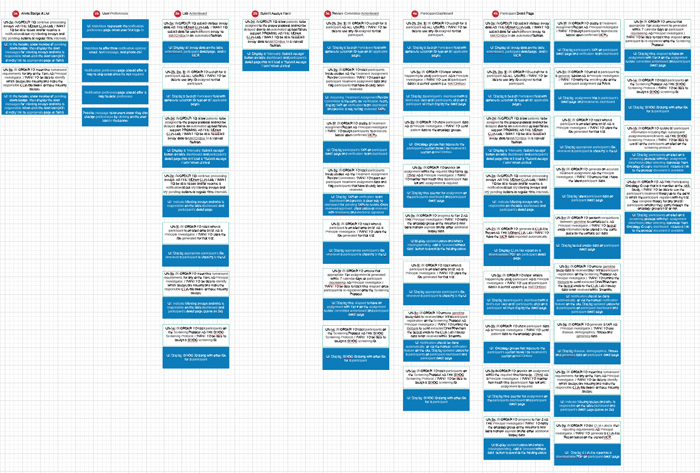
Clinical Sample Management System
Category
UI/UX Information Architecture Wireframe Prototype Accessibility Requirements
The Clinical Sample Management System (CSMS) is a centralized application designed to support clinical research by tracking biospecimens across distributed collection, processing, storage, and analysis workflows.
Primarily used by biorepository teams and laboratory staff, CSMS presented both technical and design challenges—particularly in understanding the intricacies of specimen tracking and quality control processes. A critical requirement was to ensure that CSMS forms could be seamlessly integrated into other MATCH applications as “common UI” components, maintaining a cohesive user experience across systems.
This required close collaboration between designers and UI engineers across multiple projects to align on design standards, interaction patterns, and technical implementation—ensuring a unified and intuitive interface for users navigating between CSMS and the broader MATCH ecosystem.
CSMS Landing Page
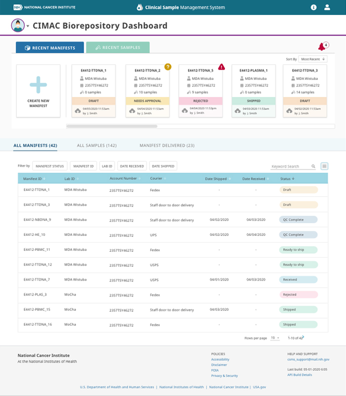
Manifest Details Page
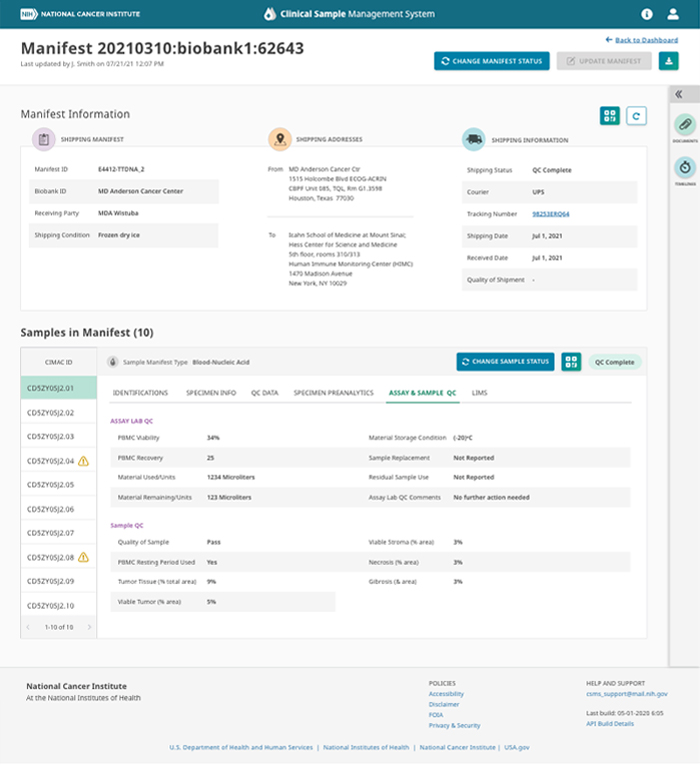
Manifest Timeline Panel
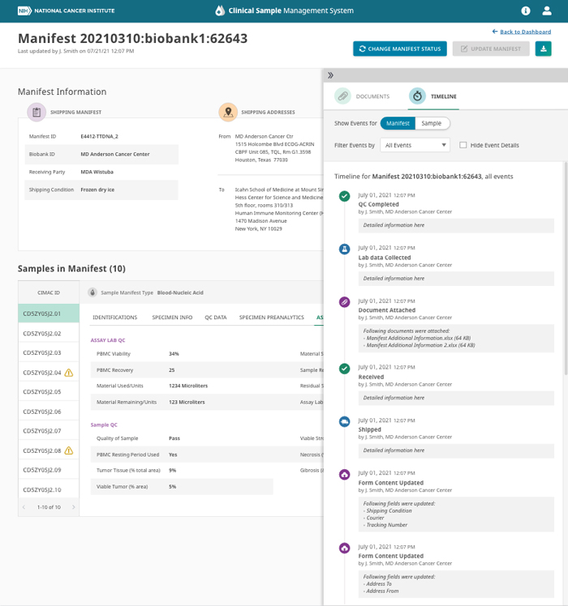
Add Comments to a Manifest
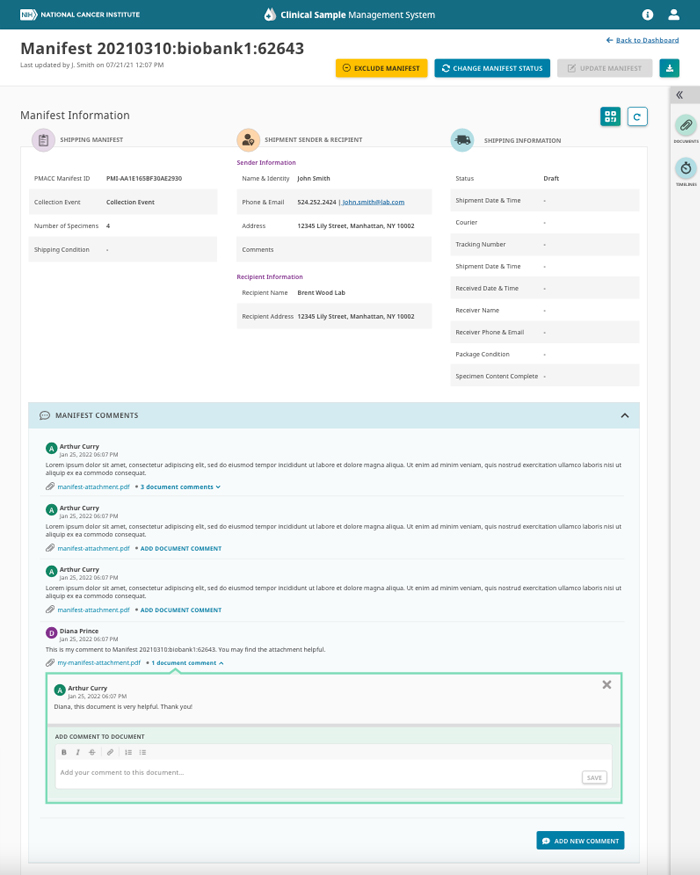
Site Map and User Role Assignment
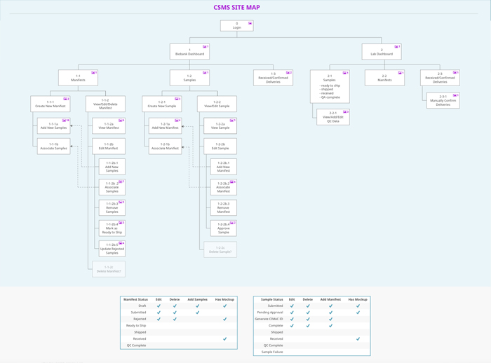
Childhood Cancer Data Initiative emFACT
Category
UI/UX Information Architecture Wireframe Prototype Accessibility Requirements
The Childhood Cancer Data Initiative (CCDI) emFACT application is designed to empower families of pediatric cancer patients by helping them identify clinical trials tailored specifically to childhood cancers. Simultaneously, it serves as a critical data collection tool for researchers studying pediatric cancer, including rare and understudied conditions such as childhood brain tumors.
While pediatric cancer is a deeply emotional and challenging subject, working on this project has been profoundly meaningful. The reality that many families struggle to find treatment options for their children highlights the importance of accessible, well-designed tools. Knowing that my contributions can play a role in connecting families with potentially life-saving clinical trials makes this work incredibly rewarding.
CCDI emFACT Login Screen
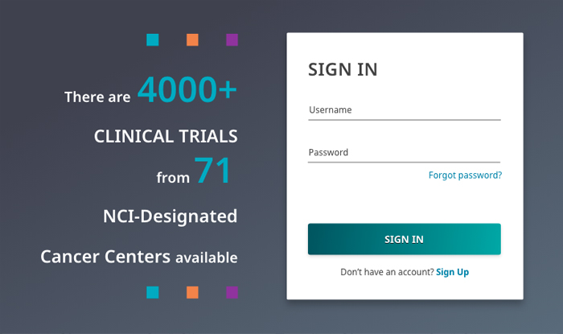
CCDI emFACT Home Page
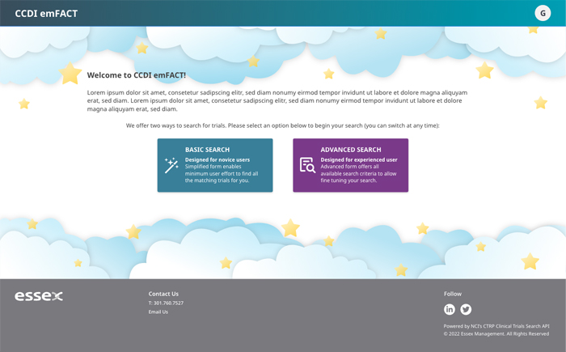
Mobile Design: CCDI emFACT Home Page
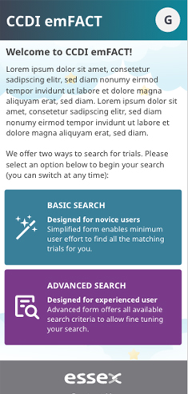
Basic Search Screen
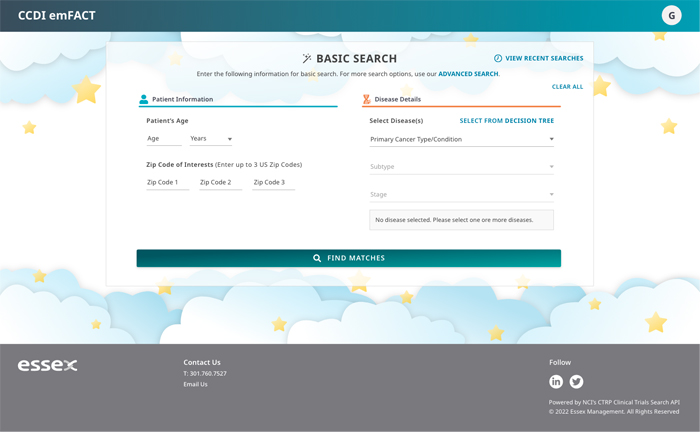
Mobile Design: Basic Search Screen
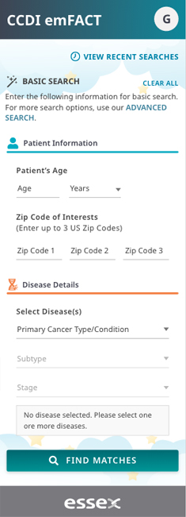
Recent Searches View
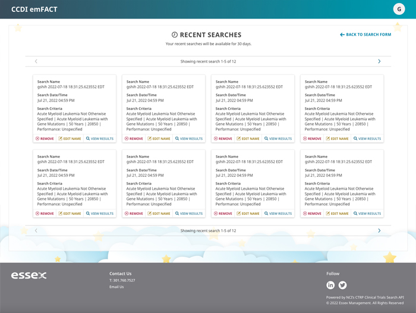
Mobile Design: Recent Searches View
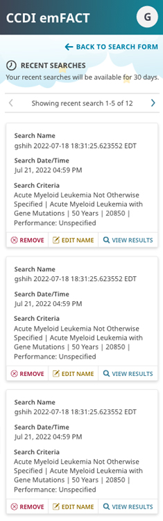
Search Results View
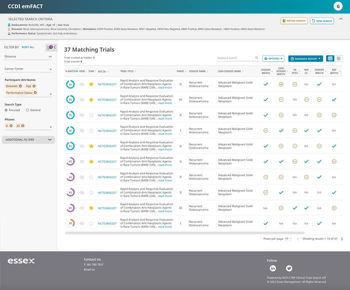
Mobile Design: Search Results View
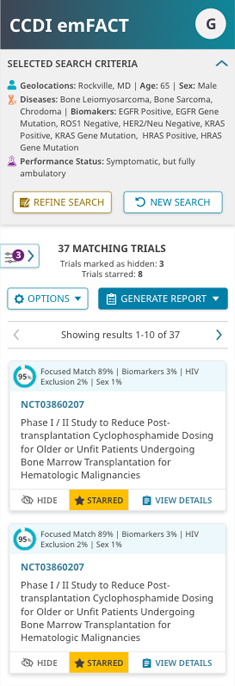
Scientific Trials Analytics Platform
Category
UI/UX Information Architecture Wireframe Prototype Accessibility Requirements
The Scientific Trials Analytics Platform (STRAP) is a comprehensive reporting system that aggregates data from multiple precision medicine clinical trial applications. It enables users to generate both high-level and domain-specific reports through interactive dashboards or downloadable files, supporting data-driven decision-making in clinical research.
Two key design challenges were developing data visualizations that are both meaningful and easy to interpret, and creating a sophisticated, yet user-friendly filtering interface to accommodate complex data sets. Close collaboration with end users was essential to understand which metrics, charts, and visual representations would deliver the most value.
The insights produced by STRAP have directly supported critical decisions, including the evaluation and approval of cancer clinical trial treatments.
STRAP Home Page
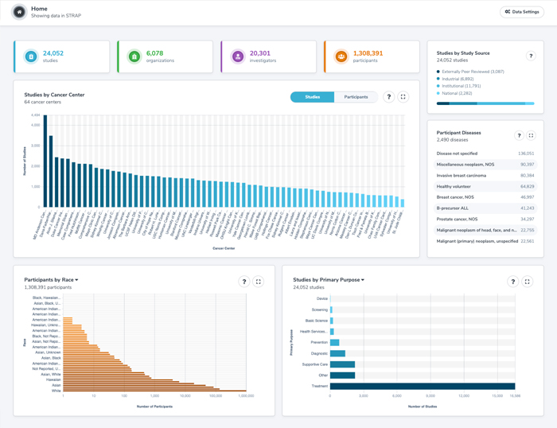
Studies Landing Page
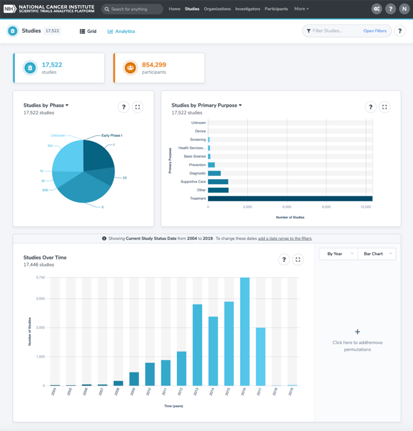
Participants Landing Page
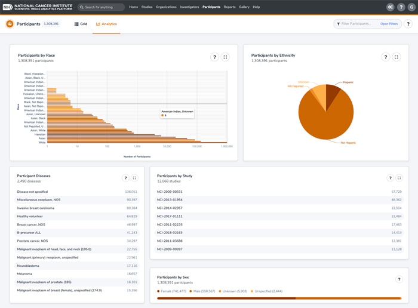
Advanced Filter Window
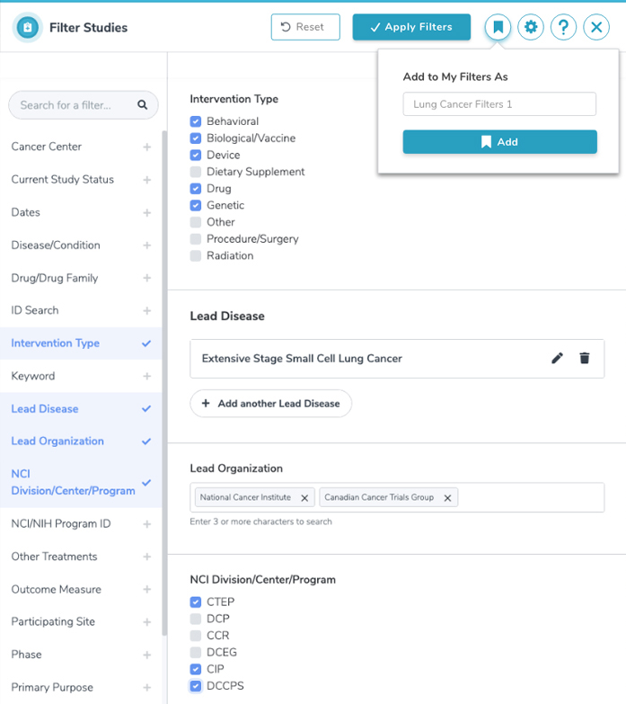
ITEM TRACKING SYSTEM (ITS)
Category
UI/UX Empthy Map Jurney Map Redesign Wireframe Information Architecture
Tools
Photoshop XD
AIR’s Item Tracking System (ITS) is a sophisticated tool designed to support test writers in the development and validation of assessment items. A core design challenge was managing the extensive metadata—often hundreds of attributes—associated with each test item, while ensuring the interface remained intuitive and efficient.
From a user experience perspective, I conducted user interviews to develop empathy maps and identify key pain points. These insights informed detailed journey maps, helping visualize the user experience and guide improvements. On the technical side, I collaborated closely with the development team to understand system logic, categorize complex information effectively, and streamline workflows for clarity and ease of use.
As part of the redesign, I also introduced a standardized AIR visual design system, promoting consistency across AIR’s suite of products.
The screen recording below showcases a high-fidelity interactive prototype created in Adobe XD.
Interactive Prototype Recording (opens in a new window)
UI/UX HTML/CSS jQuery Usability Study Accessibility Information Architecture Requirements
Tools
Photoshop Dreamweaver XD
AIRWay’s Reports System enables users to generate highly customizable student performance reports for state departments of education, districts, and schools. The system provides flexible navigation, allowing users to drill down from a high-level view at the state level to detailed insights on individual student responses.
The primary design challenge was presenting large volumes of data in a clear and user-friendly format. To address this, I designed vertical accordions within tables, which were highly effective and well-received by users. Additionally, the system is fully accessible, meeting WCAG 2.0 AA standards for accessibility.
AIRWays Reports DashboardTooltip for Performance LevelsPerformance by Roster ViewPerformance by Roster View 2Sample RequirementsNavigation Diagram
AIRWays Authoring
Category
UI/UX HTML/CSS Usability Study jQuery Accessibility Information Architecture Requirements
Tools
Photoshop Dreamweaver XD
AIRWay’s Authoring is a user-friendly platform that enables educators to create tests and lesson plans for students. Users can start a new project from pre-built templates, duplicate existing ones from the library, and collaborate by sharing ownership with peers.
One of the key design challenges was simplifying a complex test authoring process and implementing intuitive sharing functionality. I partnered with the product manager to define user requirements, developed wireframes, and conducted iterative usability studies throughout the design phase. To ease the learning curve, we adopted a familiar PowerPoint-style layout, which proved effective in user testing—participants found the system approachable and easy to navigate.
The application is also optimized for use across desktops, tablets, and touchscreen devices, ensuring accessibility and flexibility for educators in various environments.
AIRWays Authoring DashboardTest Item Creation ScreenTest Item Creation Screen 2Test Sharing with Districts, Schools, or IndividualsSample Workflow Requirements
Test Information Distribution Engine (TIDE)
Category
UI/UX Information Architecture HTML/CSS jQuery Wireframe Usability Study Accessibility
Tools
Photoshop Dreamweaver Balsamiq
The Test Information Distribution Engine (TIDE) is a critical component of AIR’s assessment ecosystem, designed to manage student information such as grade levels, testing accommodations, and eligibility data. This information is programmatically leveraged to configure individualized test settings and computer configurations within the test delivery system.
The primary design challenge was to support both streamlined on-screen data entry and a robust batch upload interface. To ensure a user-centered experience, I conducted extensive research to understand the system’s full range of functionalities. Using card-sorting techniques, I organized the features into intuitive categories, and led multiple focus group sessions to validate the site structure against user expectations.
The final product received strong positive feedback from clients and is fully compliant with WCAG 2.0 AA accessibility standards.
TIDE DashboardWireframe Using BalsamiqAdd Student Records FormUpload Student Records Validation ScreenSearch and Update Student Info from the Previous School Years
Test Delivery System (TDS)
Category
UI/UX Information Architecture HTML/CSS Wireframe Usability Study Accessibility
Tools
Photoshop Dreamweaver XD
AIR’s Test Delivery System provides a cutting-edge online platform for administering high-stakes assessments to K–12 students. Given the wide age range of users, the design approach emphasizes simplicity, clarity, and minimal distractions to ensure an intuitive and accessible experience for all students.
The screenshots below showcase a recent redesign of the login screens, focused on streamlining the login process and modernizing the overall user interface. The system is fully responsive, optimized for tablets, touchscreen devices, and desktops, and is fully compliant with WCAG 2.0 AA accessibility standards.
TDS Sign In ScreenTest Selection ScreenAudio/Video Checks ScreenStudent Test Accommodations Selection Before and After Comparison
CSSC Training Ground
Category
UI/UX HTML/CSS jQuery Accessibility
Tools
Photoshop Dreamweaver Captivate
CSSC Training Ground is an internal learning platform designed to provide departmental training resources and reference materials for over 200 staff members. The goal was to create an engaging and approachable environment where employees could explore the "what," "who," and "how" of the organization in a meaningful way.
The design concept was inspired by the parable of the Blind Men and the Elephant, illustrating how individual perspectives can be limited without a broader understanding. This theme was woven into the experience to encourage cross-functional awareness, foster collaboration, and align staff with shared values and objectives.
I led the design and development of the site in close collaboration with executive leadership, and my team and I created all training content using Adobe Captivate, ensuring consistency, clarity, and a cohesive learning experience.
The design system establishes consistent standards and enables scalability through reusable components and design patterns, allowing design teams to focus their efforts on more complex challenges.
I’ve had the privilege of learning from industry leaders such as Brad Frost and Nathan Curtis, whose insights have deepened my passion for building robust design systems. I enjoy every aspect of the process—from organizing assets and components to planning content architecture and designing the overall system. I have successfully led two end-to-end design system initiatives and am currently in the planning phase of my third: the LUMA Design System for the National Cancer Institute’s Precision Medicine Applications.
Visual Style Guide for ColorsVisual Style Guide for HeaderVisual Style Guide for Grid LayoutComponent Guide for ButtonsComponent GUide for FeedbackLUMA Design Content Planning with Excel - ColorsLUMA Design Content Planning with InVision - Components
AIR Assessment Design Style Guides
Category
UI/UX Style Guides
Tools
Photoshop Frontify
Living style guides are an important tool for web development today, especially in large, complex web applications. They help document styles and patterns, keep designers and developers in sync, and greatly help to organize and distill complex interfaces. After months of evangelizing the importance of living style guides, the upper management agreed to this effort. I directed the project from researching the right tool, planning and gathering content, and developing the guides, to completing the site.
In recent years, web accessibility has become a central focus of my work. While accessibility is a legal requirement, I view it as a critical social responsibility—one that ensures equal access and opportunity for people with disabilities, empowering greater participation in digital spaces and society at large.
One of the greatest challenges in creating accessible websites lies in the widespread lack of awareness and technical expertise among designers and developers. To address this, we developed an Accessibility Template Library, a curated collection of accessible HTML, CSS, and jQuery code for commonly used widgets and page templates. This resource enables teams to easily integrate accessible components into their projects while learning the rationale behind each accessibility feature—helping bridge the knowledge gap and promoting best practices.
Additionally, we incorporate user personas for individuals with disabilities as a core part of our design process. These personas guide decision-making by ensuring that every design choice reflects the needs, motivations, and challenges of the intended user groups—supporting the creation of truly inclusive, user-centered digital experiences.
Sample Accessibile Widget Screen 1Sample Accessibile Widget Screen 2Accessibility Overview ScreenSample Persona of User with DisabilitiesSample Persona of User with Disabilities Detail Page